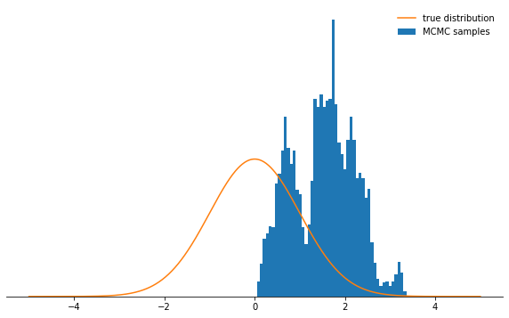

%matplotlib notebook
%matplotlib inline
import numpy as np
import matplotlib.pyplot as plt
plt.rcParams['figure.figsize'] = [10, 6]
np.random.seed(42)Metropolis-Hastings
This post includes code and notes from : https://www.tweag.io/blog/2019-10-25-mcmc-intro1/
https://en.wikipedia.org/wiki/Markov_chain_Monte_Carlo
https://en.wikipedia.org/wiki/Metropolis%E2%80%93Hastings_algorithm
state_space = ("sunny", "cloudy", "rainy")transition_matrix = np.array(((0.6, 0.3, 0.1),
(0.3, 0.4, 0.3),
(0.2, 0.3, 0.5)))n_steps = 20000
states = [0]
for i in range(n_steps):
states.append(np.random.choice((0, 1, 2), p=transition_matrix[states[-1]]))
states = np.array(states)def despine(ax, spines=('top', 'left', 'right')):
for spine in spines:
ax.spines[spine].set_visible(False)
fig, ax = plt.subplots()
width = 1000
offsets = range(1, n_steps, 5)
for i, label in enumerate(state_space):
ax.plot(offsets, [np.sum(states[:offset] == i) / offset
for offset in offsets], label=label)
ax.set_xlabel("number of steps")
ax.set_ylabel("likelihood")
ax.legend(frameon=False)
despine(ax, ('top', 'right'))
plt.show()def log_prob(x):
return -0.5 * np.sum(x ** 2)def proposal(x, stepsize):
return np.random.uniform(low=x - 0.5 * stepsize,
high=x + 0.5 * stepsize,
size=x.shape)def p_acc_MH(x_new, x_old, log_prob):
return min(1, np.exp(log_prob(x_new) - log_prob(x_old)))def sample_MH(x_old, log_prob, stepsize):
x_new = proposal(x_old, stepsize)
# here we determine whether we accept the new state or not:
# we draw a random number uniformly from [0,1] and compare
# it with the acceptance probability
accept = np.random.random() < p_acc_MH(x_new, x_old, log_prob)
if accept:
return accept, x_new
else:
return accept, x_olddef build_MH_chain(init, stepsize, n_total, log_prob):
n_accepted = 0
chain = [init]
for _ in range(n_total):
accept, state = sample_MH(chain[-1], log_prob, stepsize)
chain.append(state)
n_accepted += accept
acceptance_rate = n_accepted / float(n_total)
return chain, acceptance_ratechain, acceptance_rate = build_MH_chain(np.array([2.0]), 3.0, 10000, log_prob)chain = [state for state, in chain]print("Acceptance rate: {:.3f}".format(acceptance_rate))
last_states = ", ".join("{:.5f}".format(state)
for state in chain[-10:])
print("Last ten states of chain: " + last_states)Acceptance rate: 0.720
Last ten states of chain: 1.05847, 1.59966, 0.14389, -1.13281, 0.24131, -0.77448, -0.59703, 0.67707, 1.47065, 1.27361def plot_samples(chain, log_prob, ax, orientation='vertical', normalize=True,
xlims=(-5, 5), legend=True):
from scipy.integrate import quad
ax.hist(chain, bins=50, density=True, label="MCMC samples",
orientation=orientation)
# we numerically calculate the normalization constant of our PDF
if normalize:
Z, _ = quad(lambda x: np.exp(log_prob(x)), -np.inf, np.inf)
else:
Z = 1.0
xses = np.linspace(xlims[0], xlims[1], 1000)
yses = [np.exp(log_prob(x)) / Z for x in xses]
if orientation == 'horizontal':
(yses, xses) = (xses, yses)
ax.plot(xses, yses, label="true distribution")
if legend:
ax.legend(frameon=False)
fig, ax = plt.subplots()
plot_samples(chain[500:], log_prob, ax)
despine(ax)
ax.set_yticks(())
plt.show()def sample_and_display(init_state, stepsize, n_total, n_burnin, log_prob):
chain, acceptance_rate = build_MH_chain(init_state, stepsize, n_total, log_prob)
print("Acceptance rate: {:.3f}".format(acceptance_rate))
fig, ax = plt.subplots()
plot_samples([state for state, in chain[n_burnin:]], log_prob, ax)
despine(ax)
ax.set_yticks(())
plt.show()
sample_and_display(np.array([2.0]), 30, 10000, 500, log_prob)Acceptance rate: 0.104sample_and_display(np.array([2.0]), 0.1, 10000, 500, log_prob)Acceptance rate: 0.985
sample_and_display(np.array([2.0]), 0.1, 500000, 25000, log_prob)Acceptance rate: 0.990%matplotlib notebook
%matplotlib inline
import numpy as np
import matplotlib.pyplot as plt
plt.rcParams['figure.figsize'] = [10, 6]
np.random.seed(42)
def log_gaussian(x, mu, sigma):
# The np.sum() is for compatibility with sample_MH
return - 0.5 * np.sum((x - mu) ** 2) / sigma ** 2 \
- np.log(np.sqrt(2 * np.pi * sigma ** 2))
class BivariateNormal(object):
n_variates = 2
def __init__(self, mu1, mu2, sigma1, sigma2):
self.mu1, self.mu2 = mu1, mu2
self.sigma1, self.sigma2 = sigma1, sigma2
def log_p_x(self, x):
return log_gaussian(x, self.mu1, self.sigma1)
def log_p_y(self, x):
return log_gaussian(x, self.mu2, self.sigma2)
def log_prob(self, x):
cov_matrix = np.array([[self.sigma1 ** 2, 0],
[0, self.sigma2 ** 2]])
inv_cov_matrix = np.linalg.inv(cov_matrix)
kernel = -0.5 * (x - self.mu1) @ inv_cov_matrix @ (x - self.mu2).T
normalization = np.log(np.sqrt((2 * np.pi) ** self.n_variates * np.linalg.det(cov_matrix)))
return kernel - normalization
bivariate_normal = BivariateNormal(mu1=0.0, mu2=0.0, sigma1=1.0, sigma2=0.15)from mpl_toolkits.axes_grid1 import make_axes_locatable
fig, ax = plt.subplots()
xses = np.linspace(-2, 2, 200)
yses = np.linspace(-0.5, 0.5, 200)
log_density_values = [[bivariate_normal.log_prob(np.array((x, y))) for x in xses] for y in yses]
dx = (xses[1] - xses[0]) / 2
dy = (yses[1] - yses[0]) / 2
extent = [xses[0] - dx, xses[-1] + dx, yses[0] - dy, yses[-1] + dy]
im = ax.imshow(np.exp(log_density_values), extent=extent)
ax.set_xlabel('x')
ax.set_ylabel('y')
divider = make_axes_locatable(ax)
cax = divider.append_axes('right', size='5%', pad=0.05)
cb = fig.colorbar(im, cax=cax)
cb.set_label('probability density')
plt.show()
def sample_gibbs(old_state, bivariate_dist, stepsizes):
"""Draws a single sample using the systematic Gibbs sampling
transition kernel
Arguments:
- old_state: the old (two-dimensional) state of a Markov chain
(a list containing two floats)
- bivariate_dist: an object representing a bivariate distribution
(in our case, an instance of BivariateNormal)
- stepsizes: a list of step sizes
"""
x_old, y_old = old_state
# for compatibility with sample_MH, change floats to one-dimensional
# numpy arrays of length one
x_old = np.array([x_old])
y_old = np.array([y_old])
# draw new x conditioned on y
p_x_y = bivariate_dist.log_p_x
accept_x, x_new = sample_MH(x_old, p_x_y, stepsizes[0])
# draw new y conditioned on x
p_y_x = bivariate_dist.log_p_y
accept_y, y_new = sample_MH(y_old, p_y_x, stepsizes[1])
# Don't forget to turn the one-dimensional numpy arrays x_new, y_new
# of length one back into floats
return (accept_x, accept_y), (x_new[0], y_new[0])def build_gibbs_chain(init, stepsizes, n_total, bivariate_dist):
"""Builds a Markov chain by performing repeated transitions using
the systematic Gibbs sampling transition kernel
Arguments:
- init: an initial (two-dimensional) state for the Markov chain
(a list containing two floats)
- stepsizes: a list of step sizes of type float
- n_total: the total length of the Markov chain
- bivariate_dist: an object representing a bivariate distribution
(in our case, an instance of BivariateNormal)
"""
init_x, init_k = init
chain = [init]
acceptances = []
for _ in range(n_total):
accept, new_state = sample_gibbs(chain[-1], bivariate_dist, stepsizes)
chain.append(new_state)
acceptances.append(accept)
acceptance_rates = np.mean(acceptances, 0)
print("Acceptance rates: x: {:.3f}, y: {:.3f}".format(acceptance_rates[0],
acceptance_rates[1]))
return chain
stepsizes = (6.5, 1.0)
initial_state = [2.0, -1.0]
chain = build_gibbs_chain(initial_state, stepsizes, 100000, bivariate_normal)
chain = np.array(chain)Acceptance rates: x: 0.462, y: 0.456def plot_samples_2D(chain, path_length, burnin, ax, xlims=(-3, 3), ylims=(-0.5, 0.5)):
chain = np.array(chain)
bins = [np.linspace(xlims[0], xlims[1], 100), np.linspace(ylims[0], ylims[1], 100)]
ax.hist2d(*chain[burnin:].T, bins=bins)
ax.plot(*chain[:path_length].T, marker='o', c='w', lw=0.4,
markersize=1, alpha=0.75)
ax.set_xlabel('x')
ax.set_ylabel('y')
ax.set_xlim(xlims[0], xlims[1])
ax.set_ylim(ylims[0], ylims[1])
def plot_bivariate_samples(chain, burnin, pdf):
fig = plt.figure(figsize=(12,7))
ax_c = plt.subplot2grid((4, 4), (1, 0), rowspan=1, colspan=3)
plot_samples_2D(chain, 100, burnin, ax_c)
ax_t = plt.subplot2grid((4, 4), (0, 0), rowspan=1, colspan=3, sharex=ax_c)
plot_samples(chain[:,0], pdf.log_p_x, ax_t, normalize=False)
plt.setp(ax_t.get_xticklabels(), visible=False)
ax_t.set_yticks(())
for spine in ('top', 'left', 'right'):
ax_t.spines[spine].set_visible(False)
ax_r = plt.subplot2grid((4, 4), (1, 3), rowspan=1, colspan=1, sharey=ax_c)
plot_samples(chain[:,1], pdf.log_p_y, ax_r, orientation='horizontal',
normalize=False, legend=False)
plt.setp(ax_r.get_yticklabels(), visible=False)
ax_r.set_xticks(())
for spine in ('top', 'bottom', 'right'):
ax_r.spines[spine].set_visible(False)
plt.show()
plot_bivariate_samples(chain, burnin=200, pdf=bivariate_normal)mix_params = dict(mu1=1.0, mu2=2.0, sigma1=0.5, sigma2=0.2, w1=0.3, w2=0.7)fig, ax = plt.subplots()
xspace = np.linspace(-0.5, 3, 200)
# densities of both components
first_component = [np.exp(log_gaussian(x, mix_params['mu1'], mix_params['sigma1']))
for x in xspace]
second_component = [np.exp(log_gaussian(x, mix_params['mu2'], mix_params['sigma2']))
for x in xspace]
# apply component weights
first_component = mix_params['w1'] * np.array(first_component)
second_component = mix_params['w2'] * np.array(second_component)
ax.plot(xspace, first_component, color='black')
ax.fill_between(xspace, first_component, alpha=0.6, label="1st component")
ax.plot(xspace, second_component, color='black')
ax.fill_between(xspace, second_component, alpha=0.6, label="2nd component")
ax.set_xlabel('x')
ax.set_yticks(())
ax.legend(frameon=False)
for spine in ('top', 'left', 'right'):
ax.spines[spine].set_visible(False)
plt.show()class GaussianMixture(object):
def __init__(self, mu1, mu2, sigma1, sigma2, w1, w2):
self.mu1, self.mu2 = mu1, mu2
self.sigma1, self.sigma2 = sigma1, sigma2
self.w1, self.w2 = w1, w2
def log_prob(self, x):
return np.logaddexp(np.log(self.w1) + log_gaussian(x, self.mu1, self.sigma1),
np.log(self.w2) + log_gaussian(x, self.mu2, self.sigma2))
def log_p_x_k(self, x, k):
# logarithm of p(x|k)
mu = (self.mu1, self.mu2)[k]
sigma = (self.sigma1, self.sigma2)[k]
return log_gaussian(x, mu, sigma)
def p_k_x(self, k, x):
# p(k|x) using Bayes' theorem
mu = (self.mu1, self.mu2)[k]
sigma = (self.sigma1, self.sigma2)[k]
weight = (self.w1, self.w2)[k]
log_normalization = self.log_prob(x)
return np.exp(log_gaussian(x, mu, sigma) + np.log(weight) - log_normalization)def sample_gibbs(old_state, mixture, stepsize):
"""Draws a single sample using the systematic Gibbs sampling
transition kernel
Arguments:
- old_state: the old (two-dimensional) state of a Markov chain
(a list containing a float and an integer representing
the initial mixture component)
- mixture: an object representing a mixture of densities
(in our case, an instance of GaussianMixture)
- stepsize: a step size of type float
"""
x_old, k_old = old_state
# for compatibility with sample_MH, change floats to one-dimensional
# numpy arrays of length one
x_old = np.array([x_old])
# draw new x conditioned on k
x_pdf = lambda x: mixture.log_p_x_k(x, k_old)
accept, x_new = sample_MH(x_old, x_pdf, stepsize)
# ... turn the one-dimensional numpy arrays of length one back
# into floats
x_new = x_new[0]
# draw new k conditioned on x
k_probabilities = (mixture.p_k_x(0, x_new), mixture.p_k_x(1, x_new))
jump_probability = k_probabilities[1 - k_old]
k_new = np.random.choice((0,1), p=k_probabilities)
return accept, jump_probability, (x_new, k_new)
def build_gibbs_chain(init, stepsize, n_total, mixture):
"""Builds a Markov chain by performing repeated transitions using
the systematic Gibbs sampling transition kernel
Arguments:
- init: an initial (two-dimensional) state of a Markov chain
(a list containing a one-dimensional numpy array
of length one and an integer representing the initial
mixture component)
- stepsize: a step size of type float
- n_total: the total length of the Markov chain
- mixture: an object representing a mixture of densities
(in our case, an instance of GaussianMixture)
"""
init_x, init_k = init
chain = [init]
acceptances = []
jump_probabilities = []
for _ in range(n_total):
accept, jump_probability, new_state = sample_gibbs(chain[-1], mixture, stepsize)
chain.append(new_state)
jump_probabilities.append(jump_probability)
acceptances.append(accept)
acceptance_rates = np.mean(acceptances)
print("Acceptance rate: x: {:.3f}".format(acceptance_rates))
print("Average probability to change mode: {}".format(np.mean(jump_probabilities)))
return chain
mixture = GaussianMixture(**mix_params)
stepsize = 1.0
initial_state = [2.0, 1]
chain = build_gibbs_chain(initial_state, stepsize, 10000, mixture)
burnin = 1000
x_states = [state[0] for state in chain[burnin:]]Acceptance rate: x: 0.631
Average probability to change mode: 0.08629295966662387fig, ax = plt.subplots()
plot_samples(x_states, mixture.log_prob, ax, normalize=False, xlims=(-1,2.5))
for spine in ('top', 'left', 'right'):
ax.spines[spine].set_visible(False)
ax.set_yticks(())
ax.set_xlabel('x')
plt.show()mixture = GaussianMixture(mu1=-1.0, mu2=2.0, sigma1=0.5, sigma2=0.2, w1=0.3, w2=0.7)
stepsize = 1.0
initial_state = [2.0, 1]
chain = build_gibbs_chain(initial_state, stepsize, 100000, mixture)
burnin = 10000
x_states = [state[0] for state in chain[burnin:]]Acceptance rate: x: 0.558
Average probability to change mode: 6.139534006013391e-06fig, ax = plt.subplots()
plot_samples(x_states, mixture.log_prob, ax, normalize=False, xlims=(-2,2.5))
for spine in ('top', 'left', 'right'):
ax.spines[spine].set_visible(False)
ax.set_yticks(())
ax.set_xlabel('x')
plt.show()
Hamiltonian Monte Carlo
import numpy as np
import matplotlib.pyplot as plt
np.random.seed(42)
xspace = np.linspace(-2, 2, 100)
unnormalized_probs = np.exp(-0.5 * xspace ** 2)
energies = 0.5 * xspace ** 2
fig, ax = plt.subplots(dpi=80)
ax.plot(xspace, unnormalized_probs, label=r"$p(x)$")
ax.plot(xspace, energies, label=r"$E(x)=-\log\ p(x)$")
prop = dict(arrowstyle="-|>,head_width=0.4,head_length=0.8",
shrinkA=0,shrinkB=0)
x_index1 = 75
ax.scatter((xspace[x_index1],), (energies[x_index1],), color="k")
a_start1 = np.array((xspace[x_index1], energies[x_index1]))
a_end1 = np.array((xspace[x_index1] - xspace[x_index1], energies[x_index1]))
ax.annotate("",a_end1, a_start1, arrowprops=prop)
text_pos1 = (a_start1[0] + 0.5 * (a_end1[0] - a_start1[0]), a_end1[1] + 0.075)
ax.text(*text_pos1, r"force", horizontalalignment="center")
x_index2 = 38
ax.scatter((xspace[x_index2],), (energies[x_index2],), color="k")
a_start2 = np.array((xspace[x_index2], energies[x_index2]))
a_end2 = np.array((xspace[x_index2] - xspace[x_index2], energies[x_index2]))
ax.annotate("",a_end2, a_start2, arrowprops=prop)
text_pos2 = (a_start2[0] + 0.5 * (a_end2[0] - a_start2[0]), a_end2[1] + 0.075, )
ax.text(*text_pos2, r"force", horizontalalignment="center")
ax.set_xlabel("x")
ax.set_yticks(())
for spine in ('top', 'right', 'left'):
ax.spines[spine].set_visible(False)
ax.legend(frameon=False)
plt.show()def leapfrog(x, v, gradient, timestep, trajectory_length):
v -= 0.5 * timestep * gradient(x)
for _ in range(trajectory_length - 1):
x += timestep * v
v -= timestep * gradient(x)
x += timestep * v
v -= 0.5 * timestep * gradient(x)
return x, vdef sample_HMC(x_old, log_prob, log_prob_gradient, timestep, trajectory_length):
# switch to physics mode!
def E(x): return -log_prob(x)
def gradient(x): return -log_prob_gradient(x)
def K(v): return 0.5 * np.sum(v ** 2)
def H(x, v): return K(v) + E(x)
# Metropolis acceptance probability, implemented in "logarithmic space"
# for numerical stability:
def log_p_acc(x_new, v_new, x_old, v_old):
return min(0, -(H(x_new, v_new) - H(x_old, v_old)))
# give a random kick to particle by drawing its momentum from p(v)
v_old = np.random.normal(size=x_old.shape)
# approximately calculate position x_new and momentum v_new after
# time trajectory_length * timestep
x_new, v_new = leapfrog(x_old.copy(), v_old.copy(), gradient,
timestep, trajectory_length)
# accept / reject based on Metropolis criterion
accept = np.log(np.random.random()) < log_p_acc(x_new, v_new, x_old, v_old)
# we consider only the position x (meaning, we marginalize out v)
if accept:
return accept, x_new
else:
return accept, x_olddef build_HMC_chain(init, timestep, trajectory_length, n_total, log_prob, gradient):
n_accepted = 0
chain = [init]
for _ in range(n_total):
accept, state = sample_HMC(chain[-1].copy(), log_prob, gradient,
timestep, trajectory_length)
chain.append(state)
n_accepted += accept
acceptance_rate = n_accepted / float(n_total)
return chain, acceptance_ratedef log_prob(x): return -0.5 * np.sum(x ** 2)def log_prob_gradient(x): return -xchain, acceptance_rate = build_HMC_chain(np.array([5.0, 1.0]), 1.5, 10, 10000,
log_prob, log_prob_gradient)
print("Acceptance rate: {:.3f}".format(acceptance_rate))Acceptance rate: 0.622fig, ax = plt.subplots(dpi=80)
plot_samples_2D(chain, 100, 200, ax, xlims=(-5.5, 5.5), ylims=(-5.5, 5.5))
plt.show()chain, acceptance_rate = build_MH_chain(np.array([5.0, 1.0]), 2.6, 10000, log_prob)
print("Acceptance rate: {:.3f}".format(acceptance_rate))Acceptance rate: 0.623fig, ax = plt.subplots(dpi=80)
plot_samples_2D(chain, 100, 200, ax, xlims=(-5.5, 5.5), ylims=(-5.5, 5.5))
plt.show()
Replica Exchange
mix_params = dict(mu1=-1.5, mu2=2.0, sigma1=0.5, sigma2=0.2, w1=0.3, w2=0.7)
mixture = GaussianMixture(**mix_params)
temperatures = [0.1, 0.4, 0.6, 0.8, 1.0]from scipy.integrate import quad
def plot_tempered_distributions(log_prob, temperatures, axes, xlim=(-4, 4)):
xspace = np.linspace(*xlim, 1000)
for i, (temp, ax) in enumerate(zip(temperatures, axes)):
pdf = lambda x: np.exp(temp * log_prob(x))
Z = quad(pdf, -1000, 1000)[0]
ax.plot(xspace, np.array(list(map(pdf, xspace))) / Z)
ax.text(0.8, 0.3, r'$\beta={}$'.format(temp), transform=ax.transAxes)
ax.text(0.05, 0.3, 'replica {}'.format(len(temperatures) - i - 1),
transform=ax.transAxes)
ax.set_yticks(())
plt.show()
fig, axes = plt.subplots(len(temperatures), 1, sharex=True, sharey=True,
figsize=(8, 7))
plot_tempered_distributions(mixture.log_prob, temperatures, axes)
plt.show()def handle_left_border(leftmost_old_state, leftmost_temperature,
leftmost_stepsize, log_prob, new_multistate):
accepted, state = sample_MH(leftmost_old_state,
lambda x: leftmost_temperature * log_prob(x),
leftmost_stepsize)
new_multistate = [state] + new_multistate
return new_multistate, accepted
def handle_right_border(rightmost_old_state, rightmost_temperature,
rightmost_stepsize, log_prob, new_multistate):
accepted, state = sample_MH(rightmost_old_state,
lambda x: rightmost_temperature * log_prob(x),
rightmost_stepsize)
new_multistate = new_multistate + [state]
return new_multistate, accepted
def build_RE_chain(init, stepsizes, n_total, temperatures, swap_interval, log_prob):
from itertools import cycle
n_replicas = len(temperatures)
# a bunch of arrays in which we will store how many
# Metropolis-Hastings / swap moves were accepted
# and how many there were performed in total
accepted_MH_moves = np.zeros(n_replicas)
total_MH_moves = np.zeros(n_replicas)
accepted_swap_moves = np.zeros(n_replicas - 1)
total_swap_moves = np.zeros(n_replicas - 1)
cycler = cycle((True, False))
chain = [init]
for k in range(n_total):
new_multistate = []
if k > 0 and k % swap_interval == 0:
# perform RE swap
# First, determine the swap partners
if next(cycler):
# swap (0,1), (2,3), ...
partners = [(j-1, j) for j in range(1, n_replicas, 2)]
else:
# swap (1,2), (3,4), ...
partners = [(j-1, j) for j in range(2, len(temperatures), 2)]
# Now, for each pair of replicas, attempt an exchange
for (i,j) in partners:
bi, bj = temperatures[i], temperatures[j]
lpi, lpj = log_prob(chain[-1][i]), log_prob(chain[-1][j])
log_p_acc = min(0, bi * lpj - bi * lpi + bj * lpi - bj * lpj)
if np.log(np.random.uniform()) < log_p_acc:
new_multistate += [chain[-1][j], chain[-1][i]]
accepted_swap_moves[i] += 1
else:
new_multistate += [chain[-1][i], chain[-1][j]]
total_swap_moves[i] += 1
# We might have border cases: if left- / rightmost replicas don't participate
# in swaps, have them draw a sample
if partners[0][0] != 0:
new_multistate, accepted = handle_left_border(chain[-1][0], temperatures[0],
stepsizes[0], log_prob,
new_multistate)
accepted_MH_moves[0] += accepted
total_MH_moves[0] += 1
if partners[-1][1] != len(temperatures) - 1:
new_multistate, accepted = handle_right_border(chain[-1][-1], temperatures[-1],
stepsizes[-1], log_prob,
new_multistate)
accepted_MH_moves[-1] += accepted
total_MH_moves[-1] += 1
else:
# perform sampling in single chains
for j, temp in enumerate(temperatures):
accepted, state = sample_MH(chain[-1][j], lambda x: temp * log_prob(x), stepsizes[j])
accepted_MH_moves[j] += accepted
total_MH_moves[j] += 1
new_multistate.append(state)
chain.append(new_multistate)
# calculate acceptance rates
MH_acceptance_rates = accepted_MH_moves / total_MH_moves
# safe division in case of zero total swap moves
swap_acceptance_rates = np.divide(accepted_swap_moves, total_swap_moves,
out=np.zeros(n_replicas - 1), where=total_swap_moves != 0)
return MH_acceptance_rates, swap_acceptance_rates, np.array(chain)stepsizes = [2.75, 2.5, 2.0, 1.75, 1.6]def print_MH_acceptance_rates(mh_acceptance_rates):
print("MH acceptance rates: " + "".join(["{}: {:.3f} ".format(i, x)
for i, x in enumerate(mh_acceptance_rates)]))
mh_acc_rates, swap_acc_rates, chains = build_RE_chain(np.random.uniform(low=-3, high=3,
size=len(temperatures)),
stepsizes, 10000, temperatures, 500000000,
mixture.log_prob)
print_MH_acceptance_rates(mh_acc_rates)MH acceptance rates: 0: 0.790 1: 0.551 2: 0.415 3: 0.552 4: 0.705 def plot_RE_samples(chains, axes, bins=np.linspace(-4, 4, 50)):
for i, (chain, ax) in enumerate(zip(chains, axes)):
ax.hist(chain, bins, density=True, label="MCMC samples")
fig, axes = plt.subplots(len(temperatures), 1, sharex=True, sharey=True,
figsize=(8, 7))
plot_RE_samples(chains[100:].T, axes)
plot_tempered_distributions(mixture.log_prob, temperatures, axes)
plt.show()init = np.random.uniform(low=-4, high=4, size=len(temperatures))
mh_acc_rates, swap_acc_rates, chains = build_RE_chain(init, stepsizes,
10000, temperatures, 5,
mixture.log_prob)
print_MH_acceptance_rates(mh_acc_rates)
swap_rate_string = "".join(["{}<->{}: {:.3f}, ".format(i, i+1, x)
for i, x in enumerate(swap_acc_rates)])[:-2]
print("Swap acceptance rates:", swap_rate_string)MH acceptance rates: 0: 0.797 1: 0.552 2: 0.539 3: 0.499 4: 0.466
Swap acceptance rates: 0<->1: 0.585, 1<->2: 0.846, 2<->3: 0.829, 3<->4: 0.876fig, axes = plt.subplots(len(temperatures), 1, sharex=True, sharey=True,
figsize=(8, 7))
plot_RE_samples(chains[100:].T, axes)
plot_tempered_distributions(mixture.log_prob, temperatures, axes)
plt.show()# Detect swaps. This method works only under the assumption that
# when performing local MCMC moves, starting from two different
# initial states, you cannot end up with the same state
swaps = {}
# for each pair of chains...
for i in range(len(chains) - 1):
# shift one chain by one state to the left.
# Where states from both chains match up, a successful exchange
# was performed
matches = np.where(chains[i, :-1] == chains[i+1, 1:])[0]
if len(matches) > 0:
swaps[i] = matches
# Reconstruct trajectories of single states through the temperature
# ladder
def reconstruct_trajectory(start_index, chains):
res = []
current_ens = start_index
for i in range(len(chains)):
res.append(current_ens)
if i in swaps:
if current_ens in swaps[i]:
current_ens += 1
elif current_ens in swaps[i] + 1:
current_ens -= 1
return np.array(res)
def plot_state_trajectories(trajectories, ax, max_samples=300):
for trajectory in trajectories:
ax.plot(-trajectory[:max_samples] - 1, lw=2)
ax.set_xlabel("# of MCMC samples")
ax.set_ylabel(r"inverse temperature $\beta$")
# make order of temperatures appear as above - whatever it takes...
ax.set_yticks(range(-len(temperatures), 0))
ax.set_yticklabels(temperatures[::-1])
# which states to follow
start_state_indices = (4, 0)
fig, ax = plt.subplots(figsize=(8, 6))
trajectories = np.array([reconstruct_trajectory(i, chains)
for i in start_state_indices])
plot_state_trajectories(trajectories, ax)
plt.show()